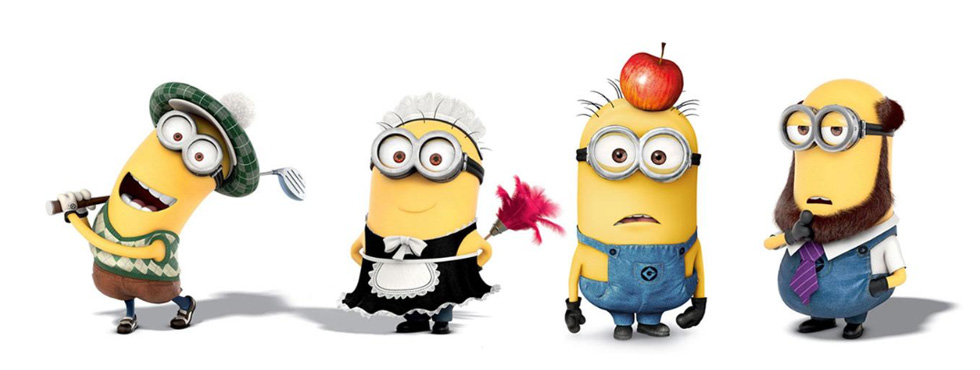
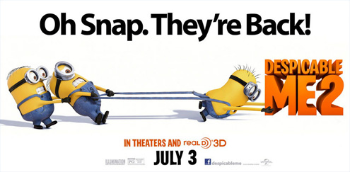

|  | |||||||
|
|||||||
| 《神偷奶爸2》制片人详解小黄人 导演亲自配音[3] |
| NO.1:外星生物or机器人？ |
|
在《神偷奶爸》系列动画中，小黄人军团绝对是最让人“无法直视”的角色。在片中，这些短胳膊短腿、爱吃香蕉的可爱小黄人们不但工作效率极高，还有一种能把事情搞砸的奇异天赋。他们拥有极其丰富的表演能力，能COSPLAY任何一种职业。如此神通广大，小黄人究竟是外星生物还是机器人，引起了影迷们的广泛讨论。 对此，照明娱乐给出的官方解释称小黄人是用：基因变异DNA、脂肪酸加两杯半香蕉泥做成的机器人。制片人克里斯托弗·麦雷丹德瑞透露，其实在动画设计之初，小黄人造型和大银幕呈现的形象相去甚远，它们大多是满身斑点、形状不规则，并且插有天线的肉团。他还介绍道，整个动画制作团队设计出上千稿的小黄人造型，并找来很多各行各业的人进行调研访问，最终才甄选到我们看到的胶囊造型。 |
|  |
| 语言揭秘 |
| NO.2：汉语、法语、西班牙语、意大利语or土著语？ |
|
在众多人眼里，小黄人是不怎么会说汉语的，为了迎合中国观众的喜爱，环球公司破天荒的在小黄人的番外篇讲起了汉语！这一点改动让诸多的中国粉丝颇为欣慰。 片中，小黄人们独特的语言系统也是一大亮点。虽然它们的对话没人能够听懂，但那种呆里呆气，永远“叽叽喳喳”的发音还是不禁让人捧腹。导演克里斯·雷纳德介绍说：“小黄人说的话你可能一句也不明白，但是你仔细听，还是可以听出其中有很多音节都是来自于人类的语言。” 雷纳德表示，在给小黄人配音的时候，工作人员搜集了很多种语言，包括法语、英语、西班牙语和意大利语，其中甚至还包括一些菜名，像poulet tiki masala” 就是一道印度鸡的法语说法。 鲜为人知的是，电影里为这些小黄人配音的正是影片的另一位导演皮埃尔·科芬。科芬回忆说，最开始小黄人的配音并不顺利，于是他自己走进录音棚试了试。他当时对制片人麦雷丹德瑞说：“我来试试吧，我只想告诉他们小黄人的声音应该是什么样的。”不过当麦雷丹德瑞听了导演的配音以后，这位制片人当场拍板，由导演亲自上阵为小黄人配音。 附：7国语言：格鲁被特工带走，小黄人叫Boss，英语；我爱你说Ti
amo、冰激凌Gelato，意大利语；给Agnes独角兽说Para tu，西班牙语；数一二三说Hana Tu Sae，韩语；坐船说快点Hayaku、干杯说Kanpai，日语；I hate
you说Tatata bala tu，葡萄牙语；格鲁被电晕带上车小黄人说快点啦，中文。 |
| 小紫人揭秘 |
| NO.3：凭空想象or借鉴经典？ |
|
在新一集的故事中，该片制作群为小黄人增加更多戏份，除此之外，他们还专门设置新的角色——“小紫人”来作为小黄人的反派对头。在动画结尾，“小黄人天团大战小紫人天团”的戏码无疑也是全片最大的亮点之一。该片制片人珍娜·海莉解释道：“拥有狂野的发型和大大的牙齿的新角色是我们可爱的小黄人的对立面，因为紫色正好是黄色的对立色，所以这些邪恶的小人就被设置成紫色的了，不过他们做坏事方式看起来也会很有趣。” 谈及小紫人故事桥段的构思，珍娜·海莉介绍说他们的灵感其实来自于经典动画《乐一通》。据了解，该动画是上世纪三十年代制作的系列动画，兔八哥、达菲鸭、猪小弟都是其中的经典角色。“在《乐一通》中，有一只叫小翠的小鸟在喝了药水之后就会变成可怕的怪兽，一些可爱的东西变成可怕的怪兽这个创意总是会很吸引人。”珍娜·海莉表示。 鉴于小黄人在全球的风靡程度，环球影片接下来还将联合照明娱乐推出小黄人担任主角的外传电影，这部计划由《地心引力》女主角桑德拉·布洛克和乔·哈姆联袂配音的动画日前暂定2015年暑期档全球公映，届时也有望和《神偷奶爸2》一样来华公映。 |
|
小黄人网站 |